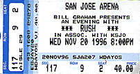

|
November 20, 1996 San Jose Arena. San Jose, CA
Key chain given out by San Jose radio station KSJO before the show. 
The San Francisco Chronicle Q AND A WITH GEDDY LEE OF RUSH By Robert Levine Bands and musical genres go in and out of style, but Rush seems almost immune to the whims of popular taste. Without achieving the kind of personal celebrity normally reserved for bands whose albums regularly go gold or platinum, the Canadian power trio has pounded out progressive hard rock for more than 20 years without ever fading from view or losing touch with its audience. Although the band has never been a critics' darling, it is cited as a major influence by such younger acts as Metallica and Primus. After a three-year break during which drummer Neil Peart put together a tribute to Buddy Rich and guitarist Alex Lifeson worked on his solo album "Victor," Rush recently released its 16th studio album, "Test for Echo." Calling from a tour stop in Pittsburgh, singer-bassist Geddy Lee, 43, discussed Rush's future, its gradual return to a more guitar-driven sound and the current tour that will take the band to the San Jose Arena on Wednesday. Q. You took the longest break in your 22 years as a band before recording "Test for Echo." What was it like to have all that time off? A. It was a great break, mentally and physically. I think it was the best thing I could have done in terms of renewing my interest in what I do. I was getting to a stage when I was a little fried and not sure if I wanted to carry on. Q. Did that break and your band mates' solo projects affect the sound of the new album? A. Yeah, I think whatever happens to you in your life shows up somehow or another in your music. For myself, having a break certainly made me hungry to get back to work. With Alex, he definitely had to exorcise certain demons, find out what it takes to do his own thing. I think that was a very positive experience for him in a lot of different ways. I think he came back more confident and playing very well. And I think Neil just likes to work, period. He has a book that's due out. Q. On the new album, you continue your move away from keyboard-driven material back to guitar-oriented rock. What inspired your return to a more raw sound? A. I think it's just been a weaning off of those textures. I think there was a time when those textures were very curious to me and it was kind of an interesting experiment that lasted quite a few years. I think that along the way we started feeling a little trapped by those devices -- a little cornered. It occurred to me at some point, "You know, I'm not getting a whole lot of joy out of these instruments anymore -- they're feeling more like a responsibility." Q. Neil Peart recently said something to the effect that being a longtime rock star is like having your refrigerator drawings releaseed fro public consumption. How do you feel about playing some of the material you wrote almost two decades ago? A. Some of it is quite a lot of fun to play and you kind of rediscover it in a certain way. On this particular tour we decided to play "2112" in its entirety. It's very idealistic, and here we are almost 20 years hence and, God, can I sing these lyrics, and can I put myself in the frame of mind to act out this mini-drama? I found myself quite able to do that onstage, although in rehearsals I had a hard time. I couldn't help myself from chuckling from time to time. Q. Just as you're revisiting some of your older material, bands like Metallica and Primus are citing it as an influence. What's your reaction to this? A. I think that a lot of that stuff has helped us look at some of our old material in a different light. It's very complimentary that some of these young bands we consider very talented are influenced by us. It makes us think that maybe we accomplished more than we thought we did with a record or a particular period of our growth. Q. Do you find it ironic that you've been embraced by some fairly hip acts after getting a generally harsh critical reception? A. There's a lot of irony in that. It proves that young musicians are attracted to our music because there are a lot of things in it attractive to young musicians. We are players first, writers second and arrangers third. I think it's kind of understandable that musicians would be drawn to our music. Q. You're in an odd position in the music industry in that you've achieved lasting success without latching on to any particular trend. To what do you attribute that? A. I get asked that question in just about every interview and I can't say that I've ever been able to answer it properly. I just set out to be in a band. I had no idea I would still be in the same band almost 30 years later. Certainly there's a certain level of musicianship. There's a feeling from our fans that there's a sense of conviction about what we do. And there has to be enough accessible sound to keep it interesting. Q. You said earlier that you're not sure how long you can see yourself doing this. Is this something you've discussed as a band? A. We don't talk about it, but it's harder to get everyone to agree to do tours every time out. Everybody's got a different opinion: Some of us like to be on the road, some of us don't like to be on the road. Sooner or later that's probably going to have to come to a head. We might carry on for a number of years and we might not. It's better for myself as a member of this band to believe that nothing lasts forever.
The San Jose Mercury November 20, 1996
Techies rush to spam Rush Don't think Rush drummer and lyricist Neil Peart is a Luddite, even though he makes fun of the Internet on the band's latest release, "Test for Echo." He just thinks techies should include a sense of humor in their specs. "Net boy, Net girl/Send your impulse 'round the world/Put your message in a modem/And through it in the Cyber Sea," he writes on "Virtuality." Not exactly a techno-slam, but Peart told Mr. Hump Day that it had gotten him spammed. "I've become the Salman Rushdie of the Internet for daring to poke fun at it," he says by phone from a tour stop in Maryland. "I can't believe the acid that had poured through the ether. I have some friends who use the Internet productively, but for the most part, it's the worldwide wank." Peart is no stranger to computers, though. "I do every bit of my work on a computer. I have a fax modem. I'm not a Luddite. But I recognize its limitations." For example, he can no longer answer mail. He used to answer every letter he received, but the volumes of e-mail, particularly over this song, have been overwhelming. "The feedback has been so vicious. The song was supposed to be a lighthearted take. It's about two vagabonds waving on the Internet as their only affirmation. "As with faith, people are sure this is good; so they are sensitive. From now on I don't talk about it. "But I think the Internet is a pale imitation, just like virtual reality is a pale imitation of reality. As compared to reading a book or what rock music is to an adolescent, these are deep things. There is no way the Internet can replicate that or come close to approximating it." He likens it to CB radio in the 1970s. "The next big thing is never the next big thing for very long." Anyway, he adds, lighten up. "Rock is a disposable editorial page scrawled on a wall. It is a reflection of that time and it is constantly evolving. It is a mirror moving down the road, reflecting what is." Rush, which plays the San Jose Arena tonight, is on a worldwide arena tour that will last until summer -- some old classics, some new material. One unearthed chestnut is the complete 30-minute "2112," from the band's breakthrough album, which was played shorter live at first because Rush was an opening band and the whole song would have taken the whole set. They are also playing the nine-minute "Natural Science," which Peart first suggested as a joke. His trio-mates latched onto it seriously. Peart, 44 and a man of eclectic intelligence, recently put out an album celebrating Buddy Rich and has been working to round out his own drumming style, focusing more on passion than precision. He's also written a book about bicycling for a month through West Africa, called "The Masked Rider." Looking out from the stage he can tell fans are getting older by the number of eyeglasses reflecting back to him.
|